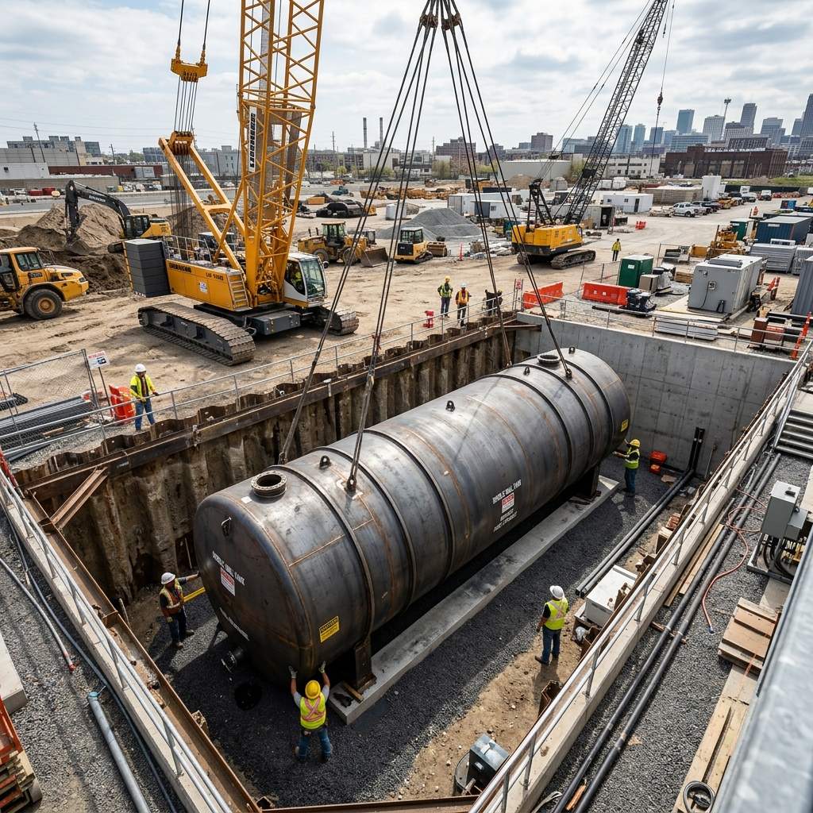
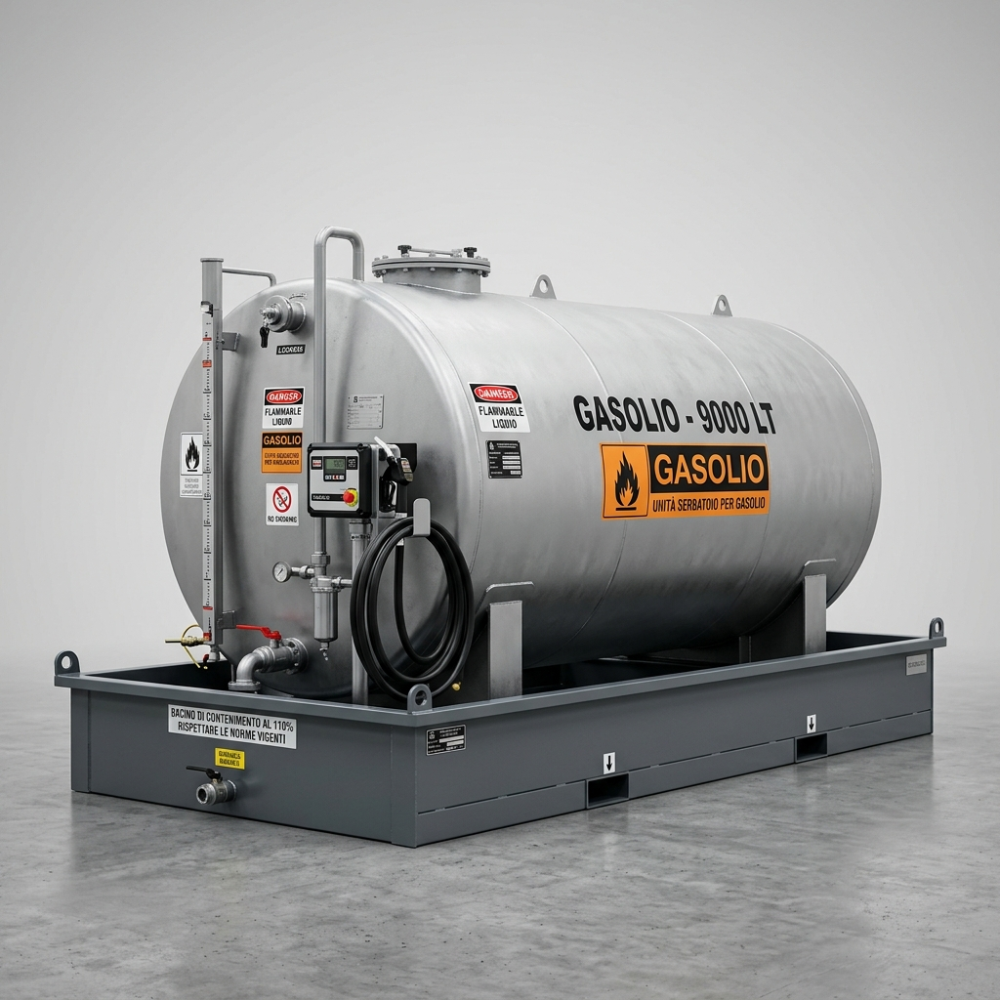

Soluzioni per
Datacenter
Sistemi di stoccaggio e pompaggio in ridondanza per l'alimentazione dei gruppi elettrogeni di emergenza. Sicurezza e continuità operativa garantite per i tuoi Datacenter.
La corretta scelta del serbatoio è fondamentale per la sicurezza, la conformità ambientale e la funzionalità dell'impianto. Anri Commerciale fornisce consulenza tecnica gratuita per identificare la soluzione più adeguata in base al tipo di carburante, al volume di stoccaggio, alle caratteristiche del suolo e ai vincoli normativi locali.
Tutti i serbatoi sono accompagnati dalla documentazione di collaudo, dalla dichiarazione di conformità CE e dal certificato di test di tenuta iniziale. Forniamo anche il supporto per le pratiche autorizzative presso gli enti competenti (VVF, ARPA, Comune).
Cisterne Interrate: Massima Capacità, Impatto Zero
Le cisterne da interrare consentono di stoccare grandi volumi di carburante occupando zero spazio in superficie — la soluzione ideale per stazioni di servizio stradali, aree di servizio autostradali e depositi con vincoli di ingombro. La versione a doppia parete con interstizio monitorabile è richiesta obbligatoriamente dalla normativa italiana nelle zone di tutela idrogeologica.

Cisterne in Acciaio Zincato / Verniciato
La soluzione tradizionale e più consolidata. Struttura in acciaio S235JR con trattamento anticorrosione interno ed esterno. Disponibile in versione singola parete (per terreni non sensibili) o doppia parete con sistema di rilevamento perdite integrato.
- Capacità: da 3.000 a 100.000 litri
- Certificazione: EN 12285-1 + PED 2014/68/UE
- Rivestimento interno: sabbiatura SA 2.5 + vernice epossidica bicomponente
- Rivestimento esterno: bituminatura o polietilene estruso
Cisterne in Polietilene (PE-HD)
Ideale per terreni con presenza d'acqua e ambienti aggressivi. Il polietilene ad alta densità è intrinsecamente resistente alla corrosione, agli agenti chimici e all'elettrolisi catodica. Peso ridotto per la movimentazione e la posa.
- Capacità: da 1.000 a 50.000 litri
- Certificazione: EN 13341 + EN 976-1
- Doppia parete in PE con spazio interstiziale
- Resistenza chimica: gasolio, benzina, biodiesel, AdBlue®
Cisterne in Vetroresina Composita (FRP)
La scelta premium per ambienti costieri, marini o ad alta aggressività chimica. La costruzione in fibra di vetro rinforzata con resina vinilestere garantisce resistenza strutturale superiore e un'aspettativa di vita di oltre 40 anni.
- Capacità: da 5.000 a 100.000 litri
- Certificazione: UL 1316 + EN 976-1
- Resistenza alla corrosione: totale, senza trattamenti aggiuntivi
- Garanzia strutturale: 30 anni
Dotazione standard inclusa nella fornitura
- Pozzetto di ispezione con chiusino carrabile
- Tubazione di sfiato e valvola antipiena
- Passacavi per sonde ATG e cavi elettrici
- Collari di ancoraggio anti-galleggiamento
- Certificato di collaudo iniziale e documentazione CE
Serbatoi Fuori Terra: Flessibili e Ispezionabili
I serbatoi fuori terra sono la scelta ideale quando si vuole mantenere piena ispezionabilità della struttura, quando i lavori di scavo non sono praticabili o quando si tratta di impianti temporanei o da potenziare rapidamente. Disponibili in acciaio con bacino di contenimento integrato, conformi al D.Lgs. 152/2006 per gli impianti soggetti ad autorizzazione.
Le versioni per aziende e flotte private vengono spesso configurate come "stazione di rifornimento privata" completa: serbatoio, pompa, sistema di controllo accessi e copertura. Tutto in un unico kit modulare.


Serbatoio Orizzontale in Acciaio
- Capacità: 1.000 – 50.000 lt
- Materiale: Acciaio S235JR
- Bacino: Integrato 110%
- Prodotti: Gasolio, Benzina, HVO
- Norma: EN 12285-2

Cisternetta in Polietilene
- Capacità: 500 – 10.000 lt
- Materiale: PE-HD roto-stampato
- Bacino: Su platea separata
- Prodotti: Gasolio, AdBlue®
- Norma: EN 13341

Impianto Flotta su Skid
- Capacità: 2.000 – 30.000 lt
- Dotazione: Pompa + Ctrl. Accessi
- Copertura: Pensilina inclusa
- Prodotti: Gasolio, HVO, AdBlue®
- Norma: EN 12285 + ADR
Normativa di Riferimento
Ogni deposito che forniamo è progettato e certificato nel pieno rispetto delle
normative europee e italiane.
Supportiamo il cliente in tutto l'iter autorizzativo.
Anri Commerciale offre un servizio di consulenza normativa per la presentazione delle istanze a VVF, ARPA e Comuni. Contattaci per valutare insieme il tuo progetto.
Trova la soluzione giusta in 3 step
Seleziona le caratteristiche del tuo deposito e ricevi un'offerta orientativa personalizzata.
Non sai da dove iniziare?
I nostri tecnici sono a tua disposizione per una consulenza gratuita. Analizziamo insieme il sito, i volumi e i requisiti normativi del tuo progetto.